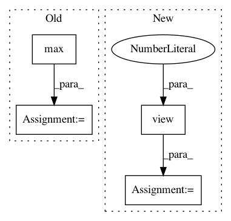

4e99c12dc0ec327e5eb5b91a21f6d6b055bee991,torchaudio/functional/functional.py,,amplitude_to_DB,#Any#Any#Any#Any#Any#,233
Before Change
x_db -= multiplier * db_multiplier
if top_db is not None:
x_db = x_db.clamp(min=x_db.max().item() - top_db)
return x_db
After Change
packed_channels = shape[-3] if x_db.dim() > 2 else 1
x_db = x_db.reshape(-1, packed_channels, shape[-2], shape[-1])
x_db = torch.max(x_db, (x_db.amax(dim=(-3, -2, -1)) - top_db).view(-1, 1, 1, 1))
// Repack batch
x_db = x_db.reshape(shape)
In pattern: SUPERPATTERN
Frequency: 3
Non-data size: 4
Instances
Project Name: pytorch/audio
Commit Name: 4e99c12dc0ec327e5eb5b91a21f6d6b055bee991
Time: 2021-02-04
Author: toastedjcaw@gmail.com
File Name: torchaudio/functional/functional.py
Class Name:
Method Name: amplitude_to_DB
Project Name: metalbubble/moments_models
Commit Name: 70e4855f5608c4481dfffd5f762e310d631d06c3
Time: 2020-10-09
Author: mmonfort@mit.edu
File Name: test_model_CAM.py
Class Name:
Method Name: returnCAM
Project Name: rusty1s/pytorch_geometric
Commit Name: 51b53dcbab8ec7ab0b6e8a64284a919db2d2254a
Time: 2018-05-08
Author: matthias.fey@tu-dortmund.de
File Name: torch_geometric/transform/local_cartesian.py
Class Name: LocalCartesian
Method Name: __call__